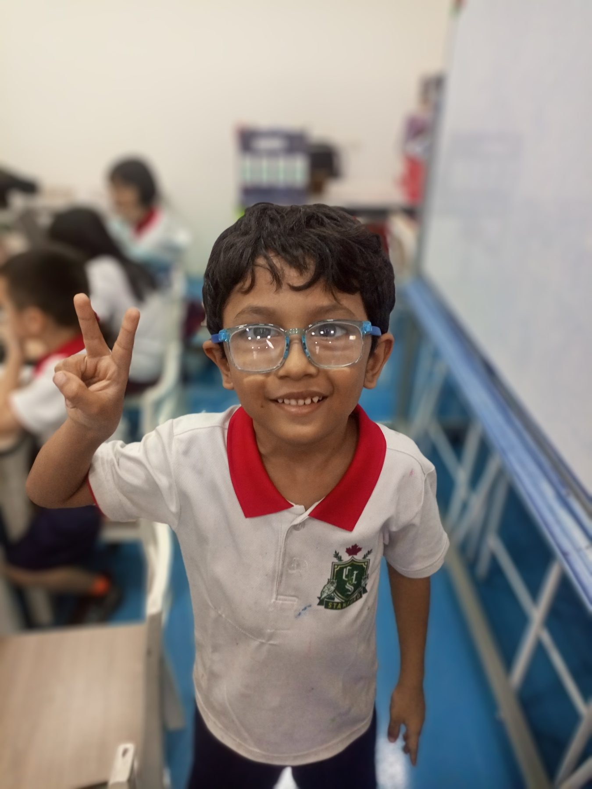

|
Name: Denial Age: 8 years old Grade: Grade 1 Tinkercad Projects: Roblox,Android Robot, Birthday cake, Water gun, Scratch Projects: Twinkle Stars, Princess and Bunny, Ballkeeper |
This 3D model is presented in an interactive viewer. You can rotate it with your mouse or just sit back and enjoy the showcase view. Double-click to reset the view.
Twinkle StarsTwinkle Stars project in Scratch! |
BallkeeperBallkeeper Game project in Scratch! |
Princess and BunnyPrincess and Bunny story project in Scratch! |